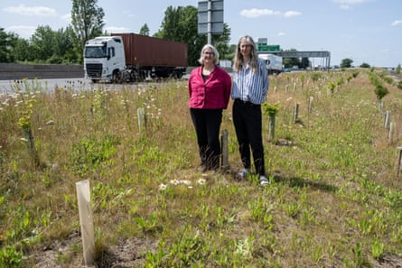
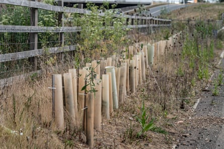

Lorries thunder over the A14 bridge north of Cambridge, above steep roadside embankments covered in plastic shrouds containing the desiccated remains of trees.
Occasionally the barren landscape is punctuated by a flash of green where a young hawthorn or a fledgling honeysuckle has emerged apparently against the odds, but their shock of life is an exception in the treeless landscape.
The new 21-mile road between Cambridge and Huntingdon cost £1.5bn and was opened in 2020 to fulfil a familiar political desire: growth. One of Britain’s biggest infrastructure projects of the past decade, it was approved by the secretary of state for transport over the heads of locally elected councillors.
National Highways, the government-owned company that builds and maintains Britain’s A roads, promised that the biodiversity net gain from the construction project would be 11.5% ; in other words, they pledged the natural environment would be left in a considerably better state after the road was built than before.
But five years on from the opening of the A14, the evidence is otherwise, and National Highways has admitted biodiversity and the environment have been left in a worse state as a result of the road project.
Empty plastic tree guards stretch for mile after mile along the new road, testament to the mass die-off of most of the 860,000 trees planted in mitigation for the impact of the road. Culverts dug as a safe route for animals such as newts and water voles are dried up and litter-strewn, while ponds designed to collect rainwater and provide a wildlife habitat are choked with mud and silt.
With concerns that the rollback of environmental protections in Labour’s planning and infrastructure bill will make it easier for developers to destroy nature, Edna Murphy, a Liberal Democrat on Cambridgeshire county council, is calling for MPs on the environmental audit committee to investigate the multimillion-pound failure of the A14 project.
“National Highways has resisted attempts by local representatives to discover what it is up to,” Murphy said.
“We have struggled over years to find out basic facts about the death of nearly all of the 860,000 trees that were originally planted and what has happened subsequently in terms of replanting.
“How can they be allowed to get away with this? How can anyone have confidence in promises about environmental mitigations in any national infrastructure projects in the future?”
Edna Murphy (left) and Ros Hathorn beside the A14.Photograph: Sean Smith/The Guardian
Murphy and her Lib Dem colleague Ros Hathorn believe the failure of the environmental improvements created in mitigation for the A14 are a shocking example of how powerful developers make environmental pledges in order to gain planning permission, which are then not upheld.
They began asking questions of National Highways in 2021 when it became obvious from the scale of the tree die-off that something had gone wrong. They asked for details of how many trees were planted, how many had died, and for regular reports on the tree planting.
A slide presentation in 2022 to Murphy and Hathorn indicated 70% of the 860,000 trees originally planted had died.
In late 2023, Martin Edwards, a National Highways project manager, suggested to local councillors the die-off may have been only 50%. He said two re-plantings had taken place since the die-off, both of which had also subsequently failed. He blamed this on the policy to replant the same tree in the same place “and keep your fingers crossed”.
Edwards insisted that lessons had been learned and that in 2023 National Highways had carried out a full soil survey and a three-month tree analysis.
This revealed they had planted the wrong species in the wrong place, and provided valuable lessons about the most appropriate season in the year to plant a tree, he said.
Nicole Gullan, principal ecologist at the ecology consultancy Arbtech, said she was surprised by the approach: “Tree planting on this scale should have been underpinned by ecological due diligence, including soil sampling, hydrological and geotechnical surveys, and an adaptive management plan to address potential failures. Proper reporting and mapping of planting locations is also essential for long-term monitoring and accountability.”
A third replanting of 165,000 trees – at an estimated cost of £2.9m – took place over the autumn and winter of 2023-2024. National Highways promised to share details of their surveys and a new planting plan with Cambridgeshire council’s biodiversity team.
Today, parts of the A14 where trees should be thriving still resemble a desert.Photograph: Sean Smith/The Guardian
But in a report this June, council officers said the information had never been passed to them despite repeated requests.
“Documents that were provided to the group were basic overviews and did not contain the detailed information requested,” the officers said. “The council therefore did not have evidence of where and why the planting had failed, which would be crucial to inform the replanting strategy, ensuring improved planting success.”
Today, parts of the A14 where trees should be thriving still resemble a desert, and the whereabouts of the 165,000 new trees remain a mystery.
“The council does not know where replanting has taken place,” officials said, adding that officers had driven along the route to try to find them, but only found a few limited areas where replanting appeared to have taken place.
Some residents have begun planting their own saplings. Vhari Russell from Brampton said she had grown various different trees in her garden in pots and planted all of those into the A14 embankment. “I think we’ve probably put in 150,” she told local reporters.
National Highways, which has been reprimanded by the office of roads and railways for failing to fulfil a key metric on biodiversity gain, has admitted that the A14 project has left nature worse off despite having pledged to improve it.
In an evaluation report National Highways said the impacts on biodiversity “were worse than expected”, as were the impacts on the water environment. National Highways has faced no sanction for these failures.
From 2026, biodiversity net gain will be mandatory for big infrastructure such as the A14 road. But Becky Pullinger, head of land management for the Wildlife Trusts, said developers had to be held to account once the mandate came in, so that recreated habitats had a fighting chance of survival. A recent report showed that only a third of ecological enhancements promised by housebuilders were fulfilled.
Pullinger said the example of the A14 showed how important it was that harm to wildlife was avoided in the first place, reducing the need for compensation planting.
“The failures highlight the challenges of trying to recreate mature habitats: it takes years, if not decades, for saplings to turn into woodland and provide much needed spaces for the wildlife [affected] by development,” she said.
A National Highways spokesperson said: “We take our responsibility to the environment very seriously. The A14 upgrade project was not limited to just improving the road; our ongoing environmental work remains a long-term project that we will continue to monitor and support. Between October 2023 and April 2024 – the optimum planting season – 165,000 trees and shrubs were planted. These comprised 16 different species specially selected to enhance the surrounding areas and habitats. Our latest survey showed that nearly 90% of these trees have survived. Nationally, we continue to monitor, evaluate and adapt our practices to respond to a rapidly changing climate to meet the challenges that it brings.”